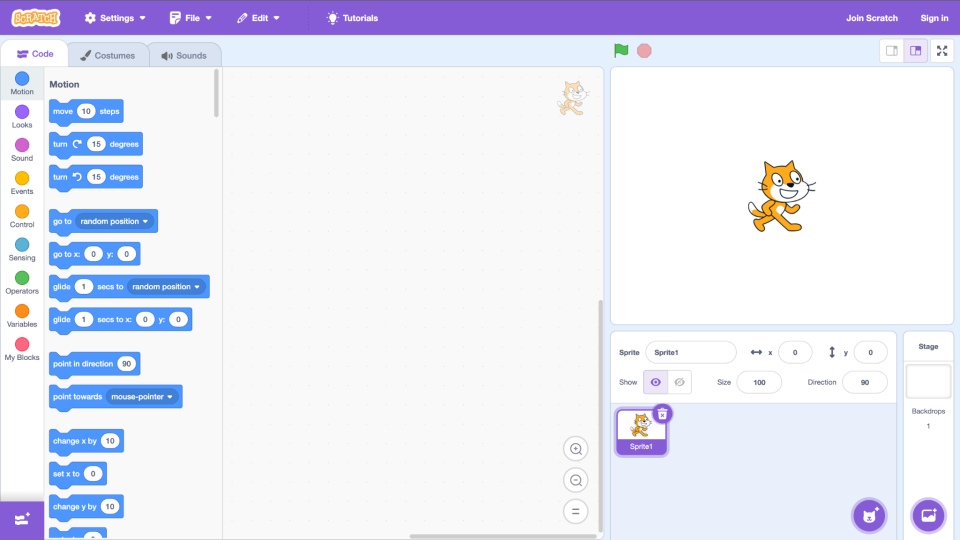
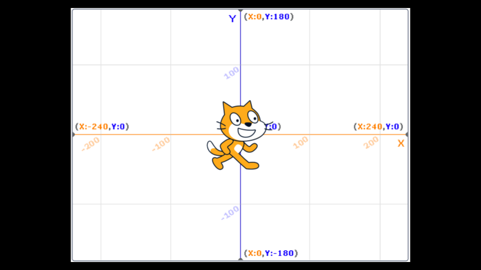

Lecture 0
- Welcome!
- Visual Studio Code and chat.py
- Computer Science and Problem Solving
- ASCII
- Unicode
- RGB
- Algorithms
- Pseudocode
- What’s Ahead
- Scratch
- Hello World
- Hello, You
- Meow, Loops, and Abstraction
- Conditionals
- Oscartime
- Ivy’s Hardest Game
- Summing Up
Welcome!
- Artificial intelligence (AI) is providing new advancements and excitement in computer science and the wide world!
- While AI provides huge advancements, sometimes eliminating the human bottlenecks that can slow down processes, being able to understand, create, and organize code allows you to be a driver, a pilot, an empowered creator through programming.
- Therefore, rather than thinking about AI as a way to remove the need to learn the fundamentals, consider how you knowing the fundamentals and being further empowered by AI will lead to whole new opportunities for you and those you serve.
Visual Studio Code and chat.py
- VS Code is an IDE or integrated development environment, where one can create code.
- To give you taste of what is to come, we could program our own chatbot called
chat.py. - On a system already configured for using OpenAI’s libraries, we could program as follows.
-
In the text editor, one could type in the following code:
from openai import OpenAI client = OpenAI() response = client.responses.create( input="In one sentence, what is CS50?", model="gpt-5" ) print(response.output_text)Notice how a library from OpenAI is imported to give us abilities from that library. A chat client is created. Then, a question, called
inputis passed to the chatclientfor an answer. Theresponseis then printed. -
We could improve upon this code by allowing the user to ask a question. Modify your code as follow:
from openai import OpenAI client = OpenAI() prompt = input("Prompt: ") response = client.responses.create( input=prompt, model="gpt-5" ) print(response.output_text)Notice that
promptis now created, allowing the user to ask a question. -
Even more, this program can be improved by providing a
system_promptto provide some further context and instructions to the chatbot:from openai import OpenAI client = OpenAI() user_prompt = input("Prompt: ") system_prompt = "Limit your answer to one sentence. Pretend you're a cat." response = client.responses.create( input=user_prompt, instructions=system_prompt, model="gpt-5" ) print(response.output_text)Notice how
system_promptis used to provide further context and instructions. - With programming, you have the ability in ten lines of text to build very powerful programs!
- We have created our own rubber duck, the CS50 Duck, to get help in your work in this course.
- Keep in mind our Academic Honesty Policy, which prohibits the use of any AI tool besides the CS50 Duck.
Computer Science and Problem Solving
-
Essentially, computer programming is about taking some input and creating some output - thus solving a problem. What happens in between the input and output, what we could call a black box, is the focus of this course.
flowchart LR in["input"] --> BOX[" ??? "] BOX --> out["output"] - For example, we may need to take attendance for a class. We could use a system called unary (also called base-1) to count one finger at a time.
- Computers today count using a system called binary (also called base-2). It’s from the term binary digit that we get a familiar term called bit. A bit is a zero or one: on or off.
- Computers only speak in terms of zeros and ones. Zeros represent off. Ones represent on. Computers are millions, and perhaps billions, of transistors that are being turned on and off.
- If you imagine using a light bulb, a single bulb can only count from zero to one.
- However, if you were to have three light bulbs, there are more options open to you!
- Inside your devices, such as your iPhone or computer, there are millions of metaphorical light bulbs called transistors that enable the activities conducted on these devices one may take for granted each day.
-
As a heuristic, we could imagine that the following values represent each possible place in our binary digit:
4 2 1 -
Using three light bulbs, the following could represent zero:
4 2 1 0 0 0 -
Similarly, the following would represent one:
4 2 1 0 0 1 -
By this logic, we could propose that the following equals two:
4 2 1 0 1 0 -
Extending this logic further, the following represents three:
4 2 1 0 1 1 -
Four would appear as:
4 2 1 1 0 0 -
We could, in fact, using only three light bulbs count as high as seven!
4 2 1 1 1 1 -
Computers use base-2 to count. This can be pictured as follows:
2^2 2^1 2^0 4 2 1 - Therefore, you could say that it would require three bits (the four’s place, the two’s place, and the one’s place) to represent a number as high as seven.
-
Similarly, to count a number as high as eight, values would be represented as follows:
8 4 2 1 1 0 0 0 -
Computers generally use eight bits (also known as a byte) to represent a number. For example,
00000101is the number 5 in binary.11111111represents the number 255. You can imagine zero as follows:128 64 32 16 8 4 2 1 0 0 0 0 0 0 0 0
ASCII
- Just as numbers are binary patterns of ones and zeros, letters are represented using ones and zeros, too!
- Since there is an overlap between the ones and zeros that represent numbers and letters, the ASCII standard was created to map specific letters to specific numbers.
-
For example, the letter
Awas decided to map to the number 65.01000001represents the number 65 in binary. You can visualize this as follows:128 64 32 16 8 4 2 1 0 1 0 0 0 0 0 1 -
If you received a text message, the binary under that message might represent the numbers 72, 73, and 33. Mapping these out to ASCII, your message would look as follows:
H I ! 72 73 33 - Thank goodness for standards like ASCII that allow us to agree upon these values!
-
Here is an expanded map of ASCII values:
0 NUL 16 DLE 32 SP 48 0 64 @ 80 P 96 ` 112 p 1 SOH 17 DC1 33 ! 49 1 65 A 81 Q 97 a 113 q 2 STX 18 DC2 34 ” 50 2 66 B 82 R 98 b 114 r 3 ETX 19 DC3 35 # 51 3 67 C 83 S 99 c 115 s 4 EOT 20 DC4 36 $ 52 4 68 D 84 T 100 d 116 t 5 ENQ 21 NAK 37 % 53 5 69 E 85 U 101 e 117 u 6 ACK 22 SYN 38 & 54 6 70 F 86 V 102 f 118 v 7 BEL 23 ETB 39 ’ 55 7 71 G 87 W 103 g 119 w 8 BS 24 CAN 40 ( 56 8 72 H 88 X 104 h 120 x 9 HT 25 EM 41 ) 57 9 73 I 89 Y 105 i 121 y 10 LF 26 SUB 42 * 58 : 74 J 90 Z 106 j 122 z 11 VT 27 ESC 43 + 59 ; 75 K 91 [ 107 k 123 { 12 FF 28 FS 44 , 60 < 76 L 92 \ 108 l 124 | 13 CR 29 GS 45 - 61 = 77 M 93 ] 109 m 125 } 14 SO 30 RS 46 . 62 > 78 N 94 ^ 110 n 126 ~ 15 SI 31 US 47 / 63 ? 79 O 95 _ 111 o 127 DEL - If you wish, you can learn more about ASCII.
- Since binary can only count up to 255 we are limited to the number of characters represented by ASCII.
Unicode
- As time has rolled on, there are more and more ways to communicate via text.
- Since there were not enough digits in binary to represent all the various characters that could be represented by humans, the Unicode standard expanded the number of bits that can be transmitted and understood by computers. Unicode includes not only special characters, but emoji as well.
-
There are emoji that you probably use every day. The following may look familiar to you:
😀 😃 😄 😁 😆 😅 😂 🙂 🙃 😉 😊 😇 😍 😘 😗 😙 😚 😋 😛 😜 😝 🤑 🤓 😎 🤗 😏 😶 😐 😑 😒 🙄 😬 😕 ☹️ 😟 😮 😯 😲 😳 😦 😧 😨
- While the pattern of zeros and ones is standardized within Unicode, each device manufacturer may display each emoji slightly differently than another manufacturer.
- More and more features are being added to the Unicode standard to represent further characters and emoji.
- If you wish, you can learn more about Unicode.
- If you wish, you can learn more about emoji.
RGB
- Zeros and ones can be used to represent color.
-
Red, green, and blue (called
RGB) are a combination of three numbers.72 73 33
-
Taking our previously used 72, 73, and 33, which said
HI!via text, would be interpreted by image readers as a light shade of yellow. The red value would be 72, the green value would be 73, and the blue would be 33. - The three bytes required to represent various colors of red, blue, and green (or RGB) make up each pixel (or dot) of color in any digital image. Images are simply collections of RGB values.
- Zeros and ones can be used to represent images, videos, and music!
- Videos are sequences of many images that are stored together, just like a flipbook.
- Music can be represented similarly using various combinations of bytes.
Algorithms
- Problem-solving is central to computer science and computer programming. An algorithm is a step-by-step set of instructions to solve a problem.
- Imagine the basic problem of trying to locate a single name in a phone book.
- How might one go about this?
- One approach could be to simply read from page one to the next to the next until reaching the last page.
- Another approach could be to search two pages at a time.
- A final and perhaps better approach could be to go to the middle of the phone book and ask, “Is the name I am looking for to the left or to the right?” Then, repeat this process, cutting the problem in half and half and half.
-
Each of these approaches could be called algorithms. The speed of each of these algorithms can be pictured as follows in what is called big-O notation:
Notice that the first algorithm, highlighted in red, has a big-O of
nbecause if there are 100 names in the phone book, it could take up to 100 tries to find the correct name. The second algorithm, where two pages were searched at a time, has a big-O ofn/2because we searched twice as fast through the pages. The final algorithm has a big-O of log2n, as doubling the problem would only result in one more step to solve the problem. - Programmers translate text-based, human instructions into code to solve problems.
Pseudocode
- Pseudocode is human-readable instructions that often describe the steps of an algorithm.
- The ability to create pseudocode is central to one’s success in both this class and in computer programming.
-
For example, considering the third algorithm above, we could compose pseudocode as follows:
1 Pick up phone book 2 Open to middle of phone book 3 Look at page 4 If person is on page 5 Call person 6 Else if person is earlier in book 7 Open to middle of left half of book 8 Go back to line 3 9 Else if person is later in book 10 Open to middle of right half of book 11 Go back to line 3 12 Else 13 Quit - Pseudocoding is such an important skill for at least two reasons. First, when you pseudocode before you create formal code, it allows you to think through the logic of your problem in advance. Second, when you pseudocode, you can later provide this information to others that are seeking to understand your coding decisions and how your code works.
- Notice that the language within our pseudocode has some unique features. First, some of these lines begin with verbs like pick up, open, look at. Later, we will call these functions.
- Second, notice that some lines include statements like
iforelse if.These are called conditionals. - Third, notice how there are expressions that can be stated as true or false, such as “person is earlier in the book.” We call these boolean expressions.
- Finally, notice how there are statements like “go back to line 3.” We call these loops.
- These building blocks are the fundamentals of programming.
- In the context of Scratch, which is discussed below, we will use each of the above basic building blocks of programming.
What’s Ahead
- You will be learning this week about Scratch, a visual programming language.
-
Then, in future weeks, you will learn about C. That will look something like this:
#include <stdio.h> int main(void) { printf("hello, world\n"); } - By learning C, you will be far more prepared for future learning in other programming languages like Python.
- Notice how programmers have used abstraction to build off the work of other programmers. Rather than programming in ones and zeroes, programming languages were created to abstract away from the incredibly challenging task of programming in binary to more and more easy-to-use programming languages. We can stand on the shoulders of others!
Scratch
- Scratch is a visual programming language developed by MIT.
- Scratch utilizes the same essential coding building blocks that we covered earlier in this lecture.
- Scratch is a great way to get into computer programming because it allows you to play with these building blocks in a visual manner, not having to be concerned about the syntax of curly braces, semicolons, parentheses, and the like.
-
Scratch
IDE(integrated development environment) looks like the following:
Notice that on the left, there is a palette of building blocks that you can use in your programming. To the immediate right of the building blocks, there is the area to which you can drag blocks to build a program. To the right of that, you see the stage where a cat stands. The stage is where your programming comes to life.
-
Scratch operates on a coordinate system as follows:

Notice that the center of the stage is at coordinate (0,0). Right now, the cat’s position is at that same position.
Hello World
-
To begin, drag the “when green flag clicked” building block to the programming area. Then, drag the
saybuilding block to the programming area and attach it to the previous block.when green flag clicked say [hello, world]Notice that when you click the green flag now on the stage, the cat says, “hello, world.”
-
This illustrates quite well what we were discussing earlier regarding programming:

Notice that the input
hello, worldis passed to the functionsay, and the side effect of that function running is the cat sayinghello, world.
Hello, You
-
We can make your program more interactive by having the cat say
helloto someone specific. Modify your program as below:when green flag clicked ask [What's your name?] and wait say (join [hello,] (answer))Notice that when the green flag is clicked, the function
askis run. The program prompts you, the user,What's your name?It then stores that name in the variable calledanswer. The program then passesanswerto a special function calledjoin, which combines two strings of texthello, and whatever name was provided. The value ofansweris passed as an argument tojoin. These collectively are passed to thesayfunction. The cat says,Hello,and a name. Your program is now interactive. -
Throughout this course, you will be providing inputs into an algorithm and getting outputs. This can be pictured in terms of the above program as follows:

Notice that the inputs
hello,andanswerare provided tojoin, which returnshello, David. This return value is then passed tosay, which produces the side effect of the cat speaking. -
Quite similarly, we can modify our program as follows:
when green flag clicked ask [What's your name?] and wait speak (join [hello,] (answer))Notice that this program, when the green flag is clicked, passes the same variable, joined with
hello, to a function calledspeak.
Meow, Loops, and Abstraction
- Along with pseudocoding, abstraction is an essential skill and concept within computer programming.
- Abstraction is the act of simplifying a problem into smaller and smaller problems.
- For example, if you were hosting a huge dinner for your friends, the problem of having to cook the entire meal could be quite overwhelming! However, if you break down the task of cooking the meal into smaller and smaller tasks (or problems), the big task of creating this delicious meal might feel less challenging.
-
In programming, and even within Scratch, we can see abstraction in action. In your programming area, program as follows:
when green flag clicked play sound (Meow v) until done wait (1) seconds play sound (Meow v) until done wait (1) seconds play sound (Meow v) until doneNotice that you are doing the same thing over and over again. Indeed, if you see yourself repeatedly coding the same statements, it’s likely the case that you could program more artfully – abstracting away this repetitive code.
-
You can modify your code as follows:
when green flag clicked repeat (3) play sound (Meow v) until done wait (1) secondsNotice that the loop does exactly as the previous program did. However, the problem is simplified by abstracting away the repetition to a block that repeats the code for us.
-
We can even advance this further by using the
defineblock, where you can create your own block (your own function)! Write code as follows:define meow play sound (Meow v) until done wait (1) seconds when green flag clicked repeat (3) meowNotice that we are defining our own block called
meow. The function plays the soundmeow, and then waits one second. Below that, you can see that when the green flag is clicked, our meow function is repeated three times. -
We can even provide a way by which the function can take an input
nand repeat a number of times:define meow n times repeat (n) play sound [meow v] until done wait (1) secondsNotice how
nis taken from “meow n times.”nis passed to the meow function through thedefineblock. - Overall, notice how this process of refinement led to better and better-designed code. Further, notice how we created our own algorithm to solve a problem. You will be exercising both of these skills throughout this course.
Conditionals
- Conditionals are an essential building block of programming, where the program looks to see if a specific condition has been met. If a condition is met, the program does something.
-
To illustrate a conditional, write code as follows:
when green flag clicked forever if <touching (mouse-pointer v)?> then play sound (Meow v) until doneNotice that the
foreverblock is utilized such that theifblock is triggered over and over again, such that it can check continuously if the cat is touching the mouse pointer. -
We can modify our program as follows to integrate video sensing:
when video motion > (10) play sound (Meow v) until done - Remember, programming is often a process of trial and error. If you get frustrated, take time to talk yourself through the problem at hand. What is the specific problem that you are working on right now? What is working? What is not working?
Oscartime
-
Oscartime is one of David’s own Scratch programs – though the music may haunt him because of the number of hours he listened to it while creating this program. Take a few moments to play through the Oscartime game yourself.
-
Building Oscartime ourselves, we first add the lamp post.

-
Then, write code as follows:
when green flag clicked switch costume to (oscar1 v) forever if <touching (mouse-pointer v)?> then switch costume to (oscar2 v) else switch costume to (oscar1 v)Notice that moving your mouse over Oscar changes his costume. You can learn more by exploring these code blocks.
-
Then, modify your code as follows to create a falling piece of trash:
when green flag clicked set drag mode [draggable v] go to x: (pick random (0) to (240)) y: (180) forever change y by (-1) endNotice that the trash’s position on the y-axis always begins at 180. The x position is randomized. While the trash is above the floor, it goes down 1 pixel at a time. You can learn more by exploring these code blocks.
-
Next, modify your code as follows to allow for the possibility of dragging trash.
when green flag clicked forever if <touching [Oscar v] ?> then go to x: (pick random (0) to (240)) y: (180) end endYou can learn more by exploring these code blocks.
-
Next, we can implement the scoring variables as follows:
when green flag clicked set drag mode [draggable v] go to top forever change y by (-1) endwhen green flag clicked forever if <touching [Oscar v] ?> then go to top end enddefine go to top go to x: (pick random (0) to (240)) y: (180)You can learn more by exploring these code blocks.
-
Go try the full game Oscartime.
Ivy’s Hardest Game
- Moving away from Oscartime to Ivy’s Hardest Game, we can now imagine how to implement movement within our program.
- Our program has three main components.
-
First, write code as follows:
when green flag clicked go to x: (0) y: (0) forever listen for keyboard feel for wallsNotice that when the green flag is clicked, our sprite moves to the center of the stage at coordinates (0,0) and then listens for the keyboard and checks for walls forever.
-
Second, add this second group of code blocks:
define listen for keyboard if <key (up arrow v) pressed?> then change y by (1) end if <key (down arrow v) pressed?> then change y by (-1) end if <key (right arrow v) pressed?> then change x by (1) end if <key (left arrow v) pressed?> then change x by (-1) endNotice how we have created a custom
listen for keyboardscript. For each of our arrow keys on the keyboard, it will move the sprite around the screen. -
Finally, add this group of code blocks:
define feel for walls if <touching (left wall v) ?> then change x by (1) end if <touching (right wall v) ?> then change x by (-1) endNotice how we also have a custom
feel for wallsscript. When a sprite touches a wall, it moves it back to a safe position – preventing it from walking off the screen. - You can learn more by exploring these code blocks.
- Scratch allows for many sprites to be on the screen at once.
-
Adding another sprite, add the following code blocks to your program:
when green flag clicked go to x: (0) y: (0) point in direction (90) forever if <<touching (left wall v)?> or <touching (right wall v)?>> then turn right (180) degrees end move (1) steps endNotice how the Yale sprite seems to get in the way of the Harvard sprite by moving back and forth. When it bumps into a wall, it turns around until it bumps the wall again. You can learn more by exploring these code blocks.
-
You can even make a sprite follow another sprite. Adding another sprite, add the following code blocks to your program:
when green flag clicked go to (random position v) forever point towards (Harvard v) move (1) stepsNotice how the MIT logo now seems to follow around the Harvard one. You can learn more by exploring these code blocks.
- Go try the full game Ivy’s Hardest Game.
Summing Up
In this lesson, you learned how this course sits in the wide world of computer science and programming. You learned…
- While AI can help remove human bottlenecks, learning the fundamentals in computer science and the foundational building blocks of programming will enable you to utilize emerging technologies better and better.
- Reasonable and unreasonable ways to utilize AI in this course.
- Problem-solving is the essence of the work of computer scientists.
- How numbers, text, images, music, and video are understood and represented by computers.
- The fundamental programming skill of pseudocoding.
- How abstraction will play a role in your future work in this course.
- The basic building blocks of programming including functions, conditionals, loops, and variables.
- How to build a project in Scratch.
This was CS50! Welcome aboard! See you next time!